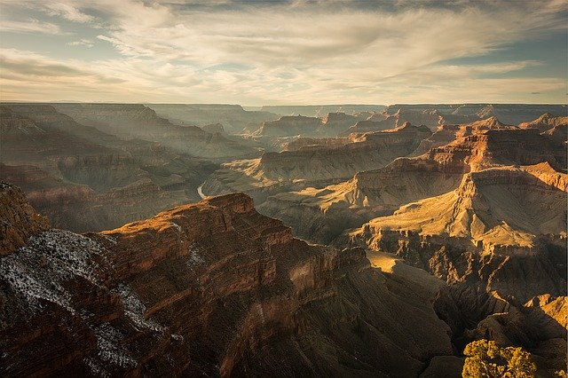

Los Angeles is the second largest city in the United States and the largest city in California. LA is a sprawling metropolis full of movie stars, wannabe actors, musicians, surfers, and lots of traffic. Some of the metro...
My Favorite Places in New York
December 17, 2023
New York is probably the most visited city in the United States. Famous for fashion, nightlife, art, food, and theater, to me, New York is the heart of the world. Every culture, language, and food is represented here. You can...

A Hike through Grand Canyon
January 1, 2025
The Grand Canyon, located in northern Arizona, is one of the most iconic natural wonders of the world. Carved by the Colorado River over millions of years, this massive canyon stretches for over 277 miles and reaches depths of more than a mile. Visitors come from all over the world to marvel at the breathtaking views, hike the various trails, and explore the canyon’s diverse ecosystems.
Whether you choose to hike, raft, or simply take in the scenery from the rim,
the Grand Canyon offers a truly awe-inspiring experience.
The Saturday City: Portland
February 29, 2022
Portland, Oregon, is a vibrant city known for its quirky culture, beautiful parks, and eco-friendly atmosphere. Often referred to as "The City of Roses," Portland is famous for its diverse food scene, craft breweries, and coffee culture. The city boasts a variety of outdoor activities, from hiking in nearby forests to cycling along scenic routes. With a growing arts scene and a focus on sustainability, Portland offers a unique blend of urban and natural beauty.
Whether exploring its many microbreweries or relaxing in one of its lush parks,
Portland is a city full of charm and creativity.